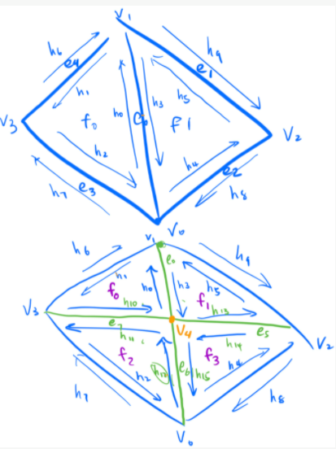

Overall in this project, I implemented various methods of geometric modelling. First I implemented the de Casteljau algorithm to evaluate both Bezier Curves and Bezier Surfaces. Then, I moved onto triangle meshes. I first implemented the algorithm for vertex normal calculation for Phoing shading and then I moved onto more intricate mesh manipulation algorithms such as edge flipping, edge splitting, and then finally loop subdivision to "smooth" out triangle meshes. Again, I learned to debug my code by making sure each step of the pipeline was working before working on the next. It was incredibly cool to see how different parts of the graphics pipeline can build upon eachother and how in each step of the pipeline, errors will propogate through until you see it on the screen.
de Casteljau's algorithm basically takes your control points, and recursively applies the following formula until there is only one point left. The only point left is a single point along the final bezier curve determined by a t value between 0 and 1.
Below are screenshots of each step of the evaluation from the original control points of a custom 6 point curve:
Below is a screenshot of a slightly different Bezier curve made from moving those 6 control points around and with a different t value:

For Bezier surfaces, the de Casteljau algorithm works very similarly to Bezier curves. The only difference is that you apply the interpolation algorithm to each of the axis instead of to just one set of control points to find a point on the Bezier surface determined by both a u and v value (essentially the t value for both the horizontal and vertical axis respectively). The inputs to the de Casteljau algorithm for Bezier surfaces is a 2d grid of control points. You can either apply the de Casteljau algorithm to each row first to find one point per row and then using the algorithm on the remaining points to find the point on the Bezier surface or you can do the reverse and apply the algorithm to the columns first.
To implement the de Casteljau algoirthm in order to evaluate Bezier surfaces, I took the approach of evaluating the rows of input control points first and then performing the algorithm on the evaluated points from the input rows. I implemented evaluateStep in the same way I evaluated evaluateStep for part 1. I then implemented evaluate1D which takes in a vector of control points and outputs the result of recursively applying the evaluateStep function until there is only one point left. Finally, I implemented evaluate which takes in a u and v parameter and then I applied the evaluate1D method to each row of the input control points with t parameter u. I then applied the evaluate1D method on the results of evaluate1D from each row with t parameter v.
This is a screenshot of bex/teapot.bez evaluated by my implementation:

To implement area-weighted vertex normals, I first implemented two helper functions. First, I implemented area() which takes in a vector of Vector3D points that define the vertices of a triangle and outputs the area of the triangle. The function returns the norm of the cross product of two edges formed by the vertices of the triangle divided by two. Second, I implemented weightedNormal() which takes in a vector of Vector3D points that define the vertices of a triangle and outputs the normalized normal vector of the triangle multiplied by the triangles area. I found the normalilzed normal vector of the triangle by taking the cross product of two edges of the triangle formed by the vertices and normalizing the normal vector. I then multiplied this normalized normal vector by the area of the triangle by passing in the points to area() and then returning the weighted normal vector.
Finally, I implemented the normal method of Vertex by looping through each adjacent triangle of the vertex and summing together the weighted normal of each triangle by passing in the vertices of each adjacent triangle into weightedNormal(). To find each adjacent triangle, I first grabbed the halfedge of the vertex then I looped through each halfedge of the associated triangle of the halfedge to caputre the three vertices of the triangle. To go to the next triangle, I simply set the halfedge pointer equal to a halfedge of the next triangle adjacent to the vertex. I kept a counter and looped through the halfedges adjacent to the vertex until the counter reached the degree of the vertex.
Here is a screenshot of the dae/teapot.dae with and without using vertex normals for shading:


To implement the edge flip operation, I found a diagram of the mesh before and after the flip. The diagram was labelled with every vertex, face, edge, and halfedge in such a way that I could actually conserve some pointer reassignments in the program. To do so, mesh objects that pointed to each other stayed grouped together. In the method itself, I established all the mesh elements named after the mesh elements of the diagram. I then simply went through and reassigned the pointers of the faces, vertices, and halfedges correctly. Because objects that pointed together were kept grouped together, I didn't have to do any reassigning to any edges of the mesh because all the edges continued to point to the same halfedges. Also, there were no mesh objects created in this operation, so I didn't need to create any new objects. I just simply reassigned pointers.
Here are a couple screenshots showing the teapot before and after some edge flips:



Implementing the edge split operation was slightly trickier than implementing the edge flip operation. Like in Part 4, I found a diagram of the mesh before and after the flip on Piazza. Again, the diagram was labelled so I could preserve some pointeres (which wasn't much). I created 3 new edges, 6 new halfedges, one new vertex, and two new faces in this algorithm. I first established all the existing mesh elements and named them after the mesh element naming scheme of the diagram. I then established new mesh elements by creating new ones and naming the new elements after the naming scheme of the diagram as well. Finally, I just simply went through each vertex, face, edge, and halfedge to reassign pointers to match that of the diagram.
Here are some screenshots showing the teapot before and after some edge splits:


Here are some screenshots showing the teapot before and after some edge splits and flips:

To perform loop subdivision, I followed the algorithm laid out in the code comments. I first computed new positions for all the vertices in the input mesh. I looped through each existing vertex in the mesh, set the isNew paramter as false, and calculated its new position using the algorithm from the problem spec. Second, I computed the updated vertex positions associated with the new vertices that hadn't been created yet. To do so, I looped through every existing edge, marked the isNew parameter as false, and stored the new calculated position into the newPosition field of the edge. Next, I split every edge in the mesh. To do so, I stored the number of edges in a Size variable num_edges and then performed a loop of the edges until the counter reached the size of num_edges. This was to prevent the algorithm from looping through every single edge infinitely. However, in this step, I had to go back to my edge flip method and modify it. I went back to my edge split algorithm and set the new vertex and edge isNew fields to true and I set the new vertex's position to be the split edge's newPosition. Then after splitting every old edge in the mesh, I flipped the new edges that pointed to both an old and new vertex. TO do so I simply checked to see if the vertice's isNew field for the edge equaled eachother. If they didn't, I flipped the edge. I also set every new edge's isNew field to be false after this because there was no need to keep track of new edges after the operation. Finally, I went through each vertex and copied the new vertex position in the the position field and set the isNew field to false.
The only two debugging issues I ran into were: Infinite loops and what appeared to be "spiky" meshes. To find the infinite loop, I added a print statement after each section of my algorithm. I found that the infinite loop happened during the edge split phase and I found the cause to be that I was recomputing edgesEnd() each iteration of the for loop. As a result, I changed the loop to be a while loop and kept track of the original mesh's number of edges in a variable computed before more edges were added to the mesh. I then resolved the "spiky" mesh issue by printing out each vertex's position and newPosition field. I discovered that the newPosition fields of the vertices contained many zeros. This explained why one vertex of each edge seemed to be going to the origin. I resolved this issue by going back to all my new position calculations and making sure the casting of the number types was correct.
Upon observation, the sharp corners and edges of meshes tend to disappear into smooth rounded corners when performing loop subdivision. Here is an example:


When performing subdivision on the cube, the cube bacme asymmetric after repeated subdivisions. TO mitigate this, I preprocessed the cube by adding splits and flips on each face to make each face contain more triangles and specifically equal triangles. In doing so, this helped alleviate some of the effects of the asymmetry. This makes sense because there were so few triangles on the cube before that any subdivision has each vertex highly affected by the others in the mesh. By adding more triangles, the averaging algorithm of subdivision becomes smoother.